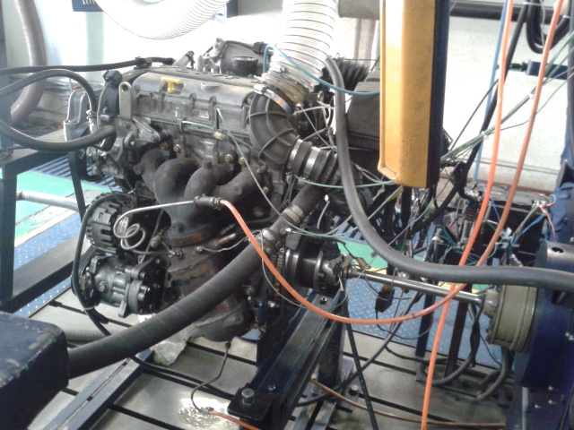

Welcom to Ali Golmirzaei's pageIn this page I describe some of my experiences. I grouped them by the company or lab I worked in and then orderd them from most recently involved to leaset recently involved. |
The overall aim of this company is: ECU Calibration (emission, fuel consumption, performance, monitoring and diagnostic, ..), ECU hardware/software development and Technical consulting.
Today a vehicle producer needs to test a newly designed vehicle before mass producing it. These tests called fleet test. In this test the company produces noticable number of cars and sends all of them to travel over the country to make sure that new vehicle withstand all climates, altitudes, special conditions and etc. These tests are normally take long time and they are expensive. Thus, if a small problem observed in these tests there is no need to reschedule the test. Engineers only fix that small problems and company continue to production. But for engineer to be able to understand the problem they need a set of data showing on what condition and state the problem raised. For EMS calibration teams, like the company I have worked on, these data are the ECU variables. To capture such variables one need some hardware and some skills. Up until now companies in my country used to send a specialist with the driver on the trip to gather and send data. But this is so much expensive in addition to lots of side effects such as reduced number of tested vehicles. To solve this our company decided to produce a data logger to capture the ECU variables with a cheap hardware and without the need of any especial skills to use.
So far we builded a hardware based on ARM microcontroller be able to connect to ECU by use of OBD connector and can support both KWP2000 and UDS (CAN protocol) standard. It receives the recording parameters from a USB cool disk and stores the data on the same disk. In addition to ECU communication it communicates to a GPS module and stores the current location of the vehicle on the disk too.
Beside these, this data logger is capable of bridging between computer and ECU. So another USB port added on the device to receive data from a computer (by using virtual com port) and send them to ECU.
Although its features are well enough now, but the company planned to embed a GSM/GPRS module into the device to send some reports regularly or even make the data live on the internet (so cool).
EF7 is the first Irainian engine designed by cooperation of the FEV Germany. By time passing on the ECU that used on that engine (Bosch ME7) becomes obsolete. So Iran Khodro that has produced EF7, needs to find an alternative. Their choice is Bosch ME17. But, ME17 is a different hardware and even with different software, so calibration needs to be cary out again. And this what they expect us to do.
Calibration is a long and complex task. In it, you need to fill tens of thousands of tables. My contributions to this project are
|  | ||
| ITRAK test bench | ITRAK test bench | ITRAK test bench |
| Engine rpm with/without drivability |
The overall aim of this company was to create an English learning application. This application is based on listening to a transcript and it has lots of features like text audio/video alignment, word highlighting, flash cards, lots of great reports and etc.
I developed android application for the company. I prefer to illustrate my work by images rather than text.
| Main window | Chapters window | Lesson window | Flash card window |
| Statistics window (streak) | Statistics window (listen time) |
All contents that showed in app needed to be prepared. It is also desired to publish some of the contents in website too. In addition to these, some information should be extracted from resources, like the list of courses. For website we use JEKYLL. So I developed a python application with relatively same input as JEKYLL that satisfies our needs like resource encryption, create a database containing all of the words used in resources, text audio alignment for highlighting the text in sync with audio, app faq and many more. We also create a git for our contents and link this tool to it. It means after a content addition or change it automatically call the preparing tool and after that, it deploys the content to the server, a fully automatic toolchain. really cool.
In application, we offer lots of online features. Some of them are listed below:
These features powered by some PHP codes that I developed.
The overall aim of this company was to design, manufacture, and develop of CNC machines and automation technologies. My main work on this company was to develop software and electronic equipment. The reason that I decided to do things out of my study was that all of the company members were mechanical engineers and because I was one of the company funders I wanted it to survive so I picked works that no one accepted. Unfortunately, the company went bankrupt but at least I learned a lot.
Our most bold work there was the creation of pc based 3-4axis CNC machines. I developed some electronics boards (mostly interfaces) to bridge between motor's and actuator's drivers and pc. I also customized Linuxcnc as G-code parser, machine controller, and GUI.
Beside these, I designed and manufactured a digitizer probe that used for automatic tool length measurement and engraving surface detection with the use of python scripts which I embed in Linuxcnc. Engraving surface detection means to map a 2D machining plan (G-code) to a nonPlanar surface (3d plan)
| Video of CNC (File size is 85MB) | Final produced part |
It would be fun to take a look at the history of the machine
| First generation (almost didn't work :D ) |
| Second generation | Output result of second gen |
| Third generation | Output result of third gen |
| Forth generation | Output result of forth gen | Output result of forth gen |
Although we had 5th and 6th generation, I don't have picture of them
Design and construction of two-wheeled mobile robot platform with the ability to connect to other robots with two rotational degrees of freedom.
By this project, we achieved a low-cost swarm robot platform that handles the general problems of an experimental research and allows the researchers to focus on their main context. This means the platform controllers would work in a cascade mode. The inner controllers are in the platform microcontroller and the higher ones are in researcher's area. Our main controllers in the platform are battery management system and dc motor's PID controllers. Unfortunately, because of not providing any fund by the university I was only able to create a prototype with my own money.
Below video contains:
File size is 80MB
| Total assembly | One of the PCBs | Connector |
| Sample configuration | |
| Platform wheel | Sample configuration to climb |
Nasir Virlab is a laboratory at KNTU university. I first started working in the lab because of my interest in the domain. Our first project was a small motion simulator and we designed a basic AI vehicle for it that only followed a path. After this project, lab develope the project to a more broad domain and also got sponsorships from a company (bus driving company). As a result, they planned to produce various bus simulators for the purpose of training. I got a part on designing AI vehicle's engine, pursue to my past contribution. I cooperated with a team of students created an AI engine with path planning, path following (AI vehicles had simplified dynamic model, So we control them with a realistic steering and traction), collision avoiding (anticipating position and reaction to a chance of collision) and respecting traffic rules like traffic lights. Unfortunately, I don't have any video of my work but I have some pictures of the virtual environment.
| Virtual environment | Virtual environment | One of the simulators |
Design and Computerized Implementation of a Low-Computation-Burden, Noise-Robust and Device-Independent Cardiac System Electro-mechanical Signal Processor aimed for Detection of RAT Heart Signal Events-Delineation and Alternans Calculation.
Through this project, we achieved a program that could be run on low-speed processors like cell phone processors. Actually, our goal was to prepare a system to allow unskilled persons in rural hospitals be able to interpret patient's heart state. The first stage on this issue was to delineate the signal and after that some basic statistical analysis and some more complex pattern recognition. My task was the first part, delineation. I used signal concavity as my main measure. The concavity carried out by rolling average to eliminate noise. It also eliminated baseline changing of the signal, a common issue on signals. Then it used a Schmitt trigger (hysteresis) with a dynamic threshold. This will end to detection of the signal pick points. Then further analysis would carry out to validate the point and also detect other events on the signal.
| Dynamic threashold | Pick point detection |
| Q and S detection by use of rolling std | QRS detection |
| P and T location | uncontinues baseline elimination for detection of P and T |
| Final P and T detection results |